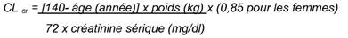

RÉSUMÉ DES CARACTÉRISTIQUES DU PRODUIT
ANSM - Mis à jour le : 19/03/2010
CETIRIZINE MYLAN 10 mg, comprimé pelliculé sécable
2. COMPOSITION QUALITATIVE ET QUANTITATIVE
Un comprimé pelliculé contient 10 mg de dichlorhydrate de cétirizine.
Excipient: un comprimé pelliculé contient 74,30 mg de lactose monohydraté.
Pour la liste complète des excipients, voir rubrique 6.1.
Comprimé pelliculé sécable.
4.1. Indications thérapeutiques
Chez l'adulte et l'enfant de 6 ans et plus:
· La cétirizine est indiquée dans le traitement des symptômes nasaux et oculaires des rhinites allergiques saisonnières et perannuelles.
· La cétirizine est indiquée dans le traitement des symptômes de l'urticaire chronique idiopathique.
4.2. Posologie et mode d'administration
Enfants de 6 à 12 ans: 5 mg deux fois par jour (un demi comprimé deux fois par jour).
Adultes et adolescents de plus de 12 ans: 10 mg une fois par jour (un comprimé).
Les comprimés doivent être avalés avec une boisson.
Sujets âgés: il n'y a pas lieu d'ajuster la posologie chez le sujet âgé dont la fonction rénale est normale.
Insuffisance rénale modérée à sévère: les données disponibles ne permettent pas de documenter le rapport bénéfice/risque en cas d'insuffisance rénale.
Compte tenu de son élimination essentiellement rénale (voir rubrique 5.2.), et s'il ne peut être utilisé de traitement alternatif, la cétirizine sera administrée dans ces situations en ajustant la posologie et l'espace entre les prises en fonction de la clairance rénale selon le tableau figurant ci-après.
La clairance à la créatinine (CLcr) peut être estimée (en ml/min) à partir de la mesure de la créatinine sérique (en mg/dl) selon la formule suivante:

Adaptation posologique chez l'insuffisant rénal:
|
Groupe |
Clairance à la créatinine |
Dose et fréquence d'administration |
|
Fonction rénale normale |
≥ 80 |
10 mg une fois par jour |
|
Insuffisance rénale légère |
50 - 79 |
10 mg une fois par jour |
|
Insuffisance rénale modérée |
30 - 49 |
5 mg une fois par jour |
|
Insuffisance rénale sévère |
< 30 |
5 mg une fois tous les 2 jours |
|
Insuffisance rénale en stade terminal et patients dialysés |
< 10 |
Contre-indiqué |
Chez les enfants présentant une insuffisance rénale, la posologie sera ajustée individuellement en fonction de la clairance rénale, de l'âge et du poids corporel du patient.
Insuffisant hépatique: aucun ajustement de la dose n'est nécessaire chez les patients atteints d'insuffisance hépatique isolée.
Chez les patients atteints d'insuffisance hépatique associée à une insuffisance rénale, un ajustement de la dose est recommandé (voir rubrique « Insuffisance rénale modérée à sévère » ci-dessus).
· Hypersensibilité connue à la substance active, à l'un des excipients, à l'hydroxyzine ou aux dérivés de la pipérazine.
· Insuffisance rénale sévère avec une clairance à la créatinine inférieure à 10 ml/min.
4.4. Mises en garde spéciales et précautions d'emploi
Aux doses thérapeutiques, aucune interaction cliniquement significative n'a été mise en évidence avec la prise d'alcool (pour des concentrations sanguines d'alcool allant jusqu'à 0,5 g/l). Cependant, la prudence est recommandée en cas de prise concomitante d'alcool.
La cétirizine doit être administrée avec prudence chez les patients épileptiques ou à risque de convulsions.
L'utilisation du comprimé n'est pas recommandée chez l'enfant de moins de 6 ans car cette forme ne permet pas l'adaptation posologique dans cette tranche d'âge.
Ce médicament contient du lactose. Son utilisation est déconseillée chez les patients présentant une intolérance au galactose, un déficit en lactase de lapp ou un syndrome de malabsorption du glucose ou du galactose (maladies héréditaires rares).
4.5. Interactions avec d'autres médicaments et autres formes d'interactions
Compte tenu des données de pharmacocinétique, de pharmacodynamie et du profil de tolérance, aucune interaction avec la cétirizine n'est attendue. A ce jour, aucune interaction pharmacodynamique ou pharmacocinétique significative n'a été rapportée lors des études d'interactions médicamenteuses réalisées notamment avec la pseudoéphédrine ou la théophylline (400 mg/jour).
Le taux d'absorption de la cétirizine n'est pas diminué par l'alimentation, bien que la vitesse d'absorption soit réduite.
Très peu de données cliniques sont disponibles sur des grossesses exposées à la cétirizine. Les études menées chez l'animal n'ont pas révélé d'effet néfaste direct ou indirect sur la gestation, le développement embryonnaire et fœtal, la parturition et le développement post-natal.
La prudence est recommandée lors de la prescription chez la femme enceinte ou en cas d'allaitement en raison du passage de la cétirizine dans le lait maternel.
4.7. Effets sur l'aptitude à conduire des véhicules et à utiliser des machines
Les mesures objectives de la capacité à conduire, de la vigilance et du temps de réaction n'ont pas démontré d'effet cliniquement significatif à la dose préconisée de 10 mg.
Les patients susceptibles de conduire un véhicule ou de manipuler un outil ou une machine potentiellement dangereux, ne devront pas dépasser la dose recommandée et évaluer au préalable leur réponse au traitement. La prise concomitante d'alcool ou d'autres dépresseurs du système nerveux central (SNC) peut entraîner une altération de la vigilance ou des performances chez les patients sensibles.
Des effets indésirables sans gravité sur le système nerveux central, incluant somnolence, fatigue, vertiges et céphalées ont été observés aux cours des essais cliniques réalisés avec la cétirizine à la dose préconisée. Dans quelques cas, un effet paradoxal de stimulation du système nerveux central a été observé.
Malgré son effet antagoniste sélectif des récepteurs H1 périphériques et la relativement faible activité anticholinergique, des cas isolés de difficultés mictionnelles, de problème d'accommodation et de sécheresse de la bouche ont été rapportés.
Des cas d'anomalie de la fonction hépatique avec augmentation des enzymes hépatiques associée à une augmentation de la bilirubine ont été rapportés. Les anomalies ont régressé dans la plupart des cas avec l'arrêt du traitement par le dichlorhydrate de cétirizine.
Essais cliniques
Plus de 3200 sujets exposés à la cétirizine ont été inclus dans les essais cliniques contrôlés en double aveugle ou dans des essais pharmaco-cliniques comparant la cétirizine à la posologie recommandée de 10 mg par jour, au placebo ou à d'autres antihistaminiques, au cours desquels les données de tolérance quantifiées sont disponibles.
Dans l'ensemble de cette population, les effets indésirables rapportés aux cours des essais contrôlés versus placebo avec une incidence de 1,0% ou plus, ont été les suivants:
|
Effets indésirables |
Cétirizine 10 mg |
Placebo |
|
Troubles de l'état général |
|
|
|
Fatigue |
1,63% |
0,95% |
|
Troubles du système nerveux central et périphérique |
|
|
|
Vertige |
1,10% |
0,98% |
|
Céphalées |
7,42% |
8,07% |
|
Troubles du système gastro-intestinal |
|
|
|
Douleur abdominale |
0,98% |
1,08% |
|
Sécheresse de la bouche |
2,09% |
0,82% |
|
Nausée |
1,07% |
1,14% |
|
Troubles psychiatriques |
|
|
|
Somnolence |
9,63% |
5,00% |
|
Troubles respiratoires |
|
|
|
Pharyngite |
1,29% |
1,34% |
La somnolence était statistiquement plus fréquente que sous placebo, mais d'intensité légère à modérée dans la majorité des cas. Des tests objectifs, validés par d'autres études, ont montré, chez le jeune volontaire sain, que les activités quotidiennes habituelles ne sont pas affectées à la dose journalière recommandée.
Les effets indésirables rapportés avec une incidence de 1% ou plus chez les enfants âgés de 6 mois à 12 ans inclus dans les essais cliniques contrôlés versus placebo ou dans les études pharmaco-cliniques sont:
|
Effets indésirables |
Cétirizine 10 mg |
Placebo |
|
Troubles du système gastro-intestinal |
|
|
|
Diarrhée |
1,0% |
0,6% |
|
Troubles psychiatriques |
|
|
|
Somnolence |
1,8% |
1,4% |
|
Troubles respiratoires |
|
|
|
Rhinite |
1,4% |
1,1% |
|
Troubles de l'état général |
|
|
|
Fatigue |
1,0% |
0,3% |
Effets indésirables rapportés depuis la commercialisation
En plus des effets indésirables rapportés au cours des essais cliniques et listés ci-dessus, des cas isolés d'effets indésirables ont été rapportés depuis la commercialisation du produit. Pour ces effets indésirables moins fréquemment rapportés, l'estimation de la fréquence (peu fréquent: ≥1/1000 et <1/100; rare: ≥1/10000 et <1/1000; très rare <1/10000) est basée sur les données de commercialisation.
Affection hématologiques et du système lymphatique:
Très rare: thrombocytopénie
Affection du système immunitaire:
Rare: hypersensibilité
Très rare: choc anaphylactique
Affections psychiatriques:
Peu fréquent: agitation
Rare: agressivité, confusion, dépression, hallucination, insomnie
Très rare: tic
Affections du système nerveux:
Peu fréquent: paresthesie
Rare: convulsions, mouvements anormaux
Très rare: dysgueusie, syncope, tremblements, dystonie, dyskinésie
Affections oculaires:
Très rare: troubles de l'accommodation, vision floue, crises oculogyres
Affections cardiaques:
Rare: tachycardie
Affections gastro-intestinales:
Peu fréquent: diarrhée
Affections hépatobiliaires:
Rare: anomalie du bilan hépatique (augmentation des enzymes hépatiques: transaminases, phosphatases alcalines, gamma-GT et de la bilirubine)
Affections de la peau et du tissu sous-cutané:
Peu fréquent: prurit, éruption cutanée
Rare: urticaire
Très rare: œdème angioneurotique, érythème pigmenté fixe
Affections du rein et des voies urinaires
Très rare: dysurie, énurésie
Troubles généraux et anomalies au site d'administration:
Peu fréquent: asthénie, malaise
Rare: œdème
Investigations:
Rare: prise de poids.
Symptômes
Les symptômes observés après un surdosage de cétirizine sont principalement associés à des effets sur le SNC ou à des effets suggérant une action anticholinergique.
Les effets indésirables rapportés après la prise d'une dose au moins cinq fois supérieure à la dose quotidienne recommandée sont: confusion, diarrhée, vertige, fatigue, céphalée, malaise, mydriase, prurit, agitation, sédation, somnolence, stupeur, tachycardie, tremblement et rétention urinaire.
Conduite à tenir en cas de surdosage
Il n'existe pas d'antidote connu à la cétirizine.
En cas de surdosage: traitement symptomatique et surveillance clinique. Un lavage gastrique peut être envisagé en cas d'ingestion récente.
La cétirizine n'est pas éliminée efficacement par hémodialyse.
5. PROPRIETES PHARMACOLOGIQUES
5.1. Propriétés pharmacodynamiques
Classe pharmacothérapeutique: ANTIHISTAMINIQUES A USAGE SYSTEMIQUE/DERIVES DE LA PIPERAZINE, Code ATC: R06AE07.
La cétirizine, métabolite de l'hydroxyzine, est un antagoniste puissant et sélectif des récepteurs H1 périphériques. Des études in vitro de liaison aux récepteurs n'ont pas révélé d'affinité mesurable pour d'autres récepteurs que les récepteurs H1.
En association aux effets anti-H1, la cétirizine administrée à la dose de 10 mg une ou deux fois par jour, inhibe la phase retardée de recrutement des éosinophiles au niveau de la peau et du tissu conjonctif des sujets atopiques, après tests de provocation allergénique.
Les études menées chez le volontaire sain ont montré que la cétirizine, aux doses de 5 et 10 mg, inhibe fortement les réactions érythémato-papuleuses induites par des concentrations élevées d'histamine au niveau de la peau. Cependant, la corrélation de l'efficacité avec ces observations n'est pas établie.
Dans une étude de 35 jours menée chez des enfants de 5 à 12 ans, il n'a pas été observé de diminution de l'effet antihistaminique (inhibition de l'érythème et des papules) de la cétirizine. A l'arrêt du traitement par la cétirizine à doses répétées, la réactivité de la peau à l'histamine est rétablie en 3 jours.
Dans une étude contrôlée versus placebo de six semaines menée chez 186 patients présentant une rhinite allergique et un asthme léger à modéré, la cétirizine 10 mg une fois par jour a amélioré les symptômes de la rhinite sans effet sur les fonctions pulmonaires. Cette étude met en évidence la sécurité d'emploi de la cétirizine chez les patients allergiques ayant un asthme léger à modéré.
Dans une étude contrôlée versus placebo, la cétirizine administrée à la dose de 60 mg pendant 7 jours n'a pas entraîné d'allongement significatif de l'intervalle QT.
A la posologie recommandée, une amélioration de la qualité de vie a été démontrée chez des patients traités par cétirizine ayant une rhinite allergique perannuelle et saisonnière.
5.2. Propriétés pharmacocinétiques
Les pics de concentrations plasmatiques mesurées à l'état d'équilibre ont été d'environ 300 ng/ml; atteints en 1,0 ± 0,5 h après administration orale. Il n'est pas observé d'accumulation après administration des doses journalières de 10 mg de cétirizine pendant 10 jours. Chez les volontaires sains, la distribution des valeurs mesurées des paramètres pharmacocinétiques, tels que le pic plasmatique (Cmax) et l'aire sous la courbe (AUC), est unimodale.
La biodisponibilité de la cétirizine n'est pas modifiée par la prise alimentaire, bien que la vitesse d'absorption soit diminuée.
La biodisponibilité de la cétirizine est équivalente lorsque la cétirizine est administrée sous forme de solution, gélule ou comprimé.
Le volume de distribution apparent est de 0,50 l/kg. La liaison aux protéines plasmatiques est de 93 ± 0,3%.
La cétirizine ne modifie pas la liaison de la warfarine aux protéines.
La cétirizine ne subit pas d'effet important de premier passage hépatique. Environ les deux tiers de la dose administrée sont éliminés sous forme inchangée dans les urines. La demi-vie plasmatique de la cétirizine est d'environ 10 heures.
La cinétique de la cétirizine est linéaire pour des doses comprises entre 5 et 60 mg.
Populations particulières
Sujet âgé: après administration d'une dose unique de 10 mg de cétirizine chez 16 sujets âgés, la demi-vie a augmenté d'environ 50% et la clairance a diminué de 40% en comparaison au sujet normal. La diminution de la clairance de la cétirizine retrouvée chez les sujets volontaires âgés semble liée à l'altération de leur fonction rénale.
Enfants et nourrissons: la demi-vie de la cétirizine est d'environ 6 heures chez les enfants de 6 à 12 ans et 5 heures chez les enfants de 2 à 6 ans. Chez les nourrissons âgés de 6 à 24 mois, celle-ci est réduite à 3,1 heures.
Insuffisant rénal: la pharmacocinétique de la molécule est similaire chez les patients ayant une insuffisance rénale légère (clairance de la créatinine supérieure à 40 ml/min) et chez les volontaires sains. Chez les patients avec une insuffisance rénale modérée, la demi-vie est augmentée d'environ un facteur 3 et la clairance est diminuée de moitié par rapport aux volontaires sains.
Chez les patients hémodialysés (clairance de la créatinine inférieure à 7 ml/min) la demi-vie est augmentée d'un facteur 3 et la clairance est diminuée de 70% par rapport aux sujets sains après administration d'une dose orale unique de 10 mg de cétirizine. La cétirizine n'est que très faiblement éliminée par hémodialyse. Un ajustement de la posologie est nécessaire en cas d'insuffisance rénale modérée ou sévère (voir rubrique 4.2).
Insuffisant hépatique: Chez les patients atteints de maladie chronique du foie (cirrhose hépatocellulaire, cholestatique ou biliaire) recevant une dose unique de 10 ou 20 mg de cétirizine, la demi-vie a été augmentée de 50% avec une diminution de 40% de la clairance comparativement aux sujets sains.
L'ajustement de la posologie est nécessaire en cas d'insuffisance hépatique seulement en cas d'insuffisance rénale associée.
5.3. Données de sécurité préclinique
Les données précliniques, issues des études conventionnelles menées chez l'animal, de sécurité pharmacologique, de toxicité chronique, de génotoxicité et du potentiel carcinogène et de reproduction, n'ont pas révélé de risque potentiel particulier pour l'être humain.
Lactose monohydraté, amidon de maïs prégélatinisé, povidone K29/K32, stéarate de magnésium.
Pelliculage: OPADRY Y-1-7000 (dioxyde de titane (E171), hypromellose, macrogol 400).
Sans objet.
18 mois: pour les comprimés pelliculés sécables en flacon (Polypropylène).
2 ans pour les comprimés pelliculés sécables sous plaquettes thermoformées (PVDC/PVC/Aluminium).
6.4. Précautions particulières de conservation
Ce médicament ne nécessite aucune précaution particulière de conservation.
6.5. Nature et contenu de l'emballage extérieur
15, 30 ou 100 comprimés pelliculés sécables sous plaquettes thermoformées (PVDC/PVC/Aluminium).
30 comprimés pelliculés sécables en flacon (Polypropylène) fermé par un bouchon (Polyéthylène)
Toutes les présentations peuvent ne pas être commercialisées.
6.6. Précautions particulières d’élimination et de manipulation
Pas d'exigences particulières.
7. TITULAIRE DE L’AUTORISATION DE MISE SUR LE MARCHE
MYLAN S.A.S.
117 ALLEE DES PARCS
69800 SAINT-PRIEST
8. NUMERO(S) D’AUTORISATION DE MISE SUR LE MARCHE
· 360 347-2: 15 comprimés pelliculés sécables sous plaquettes thermoformées (PVDC/PVC/Aluminium).
· 360 348-9: 30 comprimés pelliculés sécables sous plaquettes thermoformées (PVDC/PVC/Aluminium).
· 564 035-9: 100 comprimés pelliculés sécables sous plaquettes thermoformées (PVDC/PVC/Aluminium).
· 360 350-3: 30 comprimés pelliculés sécables en flacon (PP).
9. DATE DE PREMIERE AUTORISATION/DE RENOUVELLEMENT DE L’AUTORISATION
[à compléter par le titulaire]
10. DATE DE MISE A JOUR DU TEXTE
[à compléter par le titulaire]
Sans objet.
12. INSTRUCTIONS POUR LA PREPARATION DES RADIOPHARMACEUTIQUES
Sans objet.
Liste II.